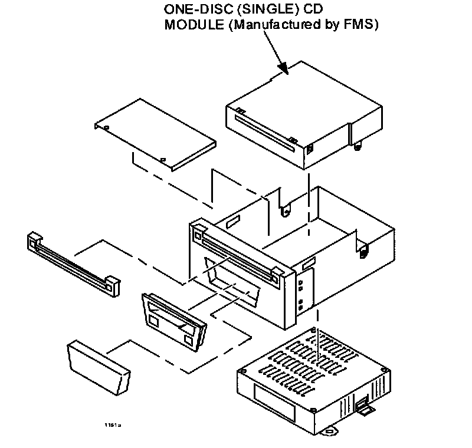
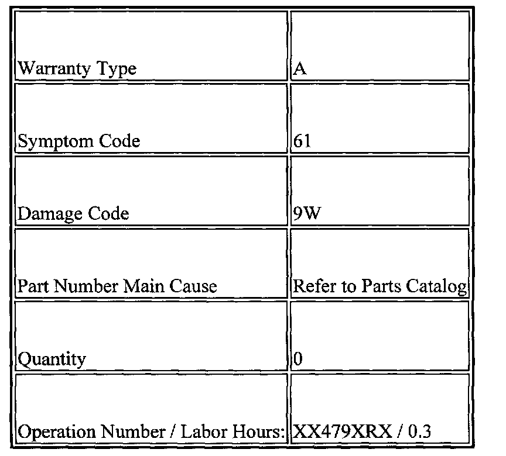

Audio System - No Sound From CD Player/Speakers
09-010/03MULTIPLE MODELS - CD MODULE MALFUNCTIONS
APPLICABLE MODEL(S)/VINS
All Mazda vehicles with single CD module audio that are manufactured by FMS
DESCRIPTION
Some customers may complain the CD module (single CD) malfunctions and no sound is heard from the speakers. When switching to the other modules (radio, cassette tape, and MD), all features are functional except no sound is heard from the speakers as well. This condition is caused when a disc is inserted into the CD module, static electricity is discharged inside the CD module causing the malfunction.
The mass production procedure has been changed to correct this concern.
Customer having this concern should have their vehicles inspected/repaired using the following procedure.
REPAIR PROCEDURE

NOTE:
Do not replace the CD module immediately. First diagnose the problem per the following procedure, then replace the CD module with an exchange unit if necessary.
1. Record all radio presets.
2. Disconnect the room fuse (10A) or negative battery cable and wait for more than 30 seconds, then operate the CD module.
^ If normal operation is restored and there is no problem with other modules (radio, cassette tape, and MD), only replace the CD module with an exchange unit according to appropriate Workshop Manual.
^ If normal operation is not restored, the problem may exist in other areas. Perform normal troubleshooting according to appropriate Workshop Manual.
NOTE:
In some cases normal operation of radio, cassette, and MD modules may be restored when CD's eject button is depressed. However, CD module still malfunctions.
3. Reprogram all radio presets.
WARRANTY INFORMATION

NOTE:
This information applies to verified customer complaints on vehicles covered under normal warranty. Refer to the SRT microfiche for warranty term information.